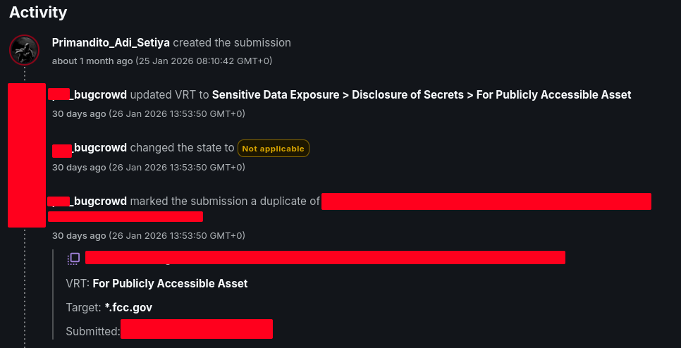
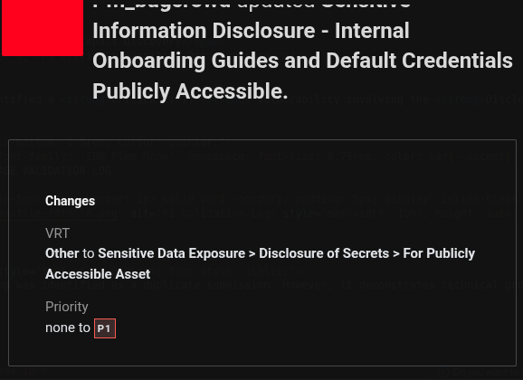

I am Primandito Adi Setiya, an independent security researcher dedicated to identifying system vulnerabilities through responsible disclosure.
I focus on enhancing digital security by uncovering potential risks and helping organizations strengthen their infrastructures through thorough research and analysis.
These statistics are manually updated and may change over time as reports are triaged or re-evaluated by platforms.
Note: This metric is exclusive to the Bugcrowd platform. It does not reflect the quality of my National Infrastructure Research (Indonesia), which is tracked separately under a different reporting pipeline.
Bugcrowd calculates Accuracy as the percentage of submissions that are valid, measured within a 90-day rolling window:
% Accuracy = [Accepted Submissions / (Accepted Submissions + Rejected Submissions + N/A Submissions)] × 100
Note: Informational and Duplicate submissions are excluded from both numerator and denominator.
Bugcrowd updated its Accuracy calculation (effective 2026) to better reflect report quality across Managed Bug Bounty programs. Under the new rules:
These changes were introduced in response to "sloptimism" — high-volume, low-confidence submissions, including AI-generated reports. Bugcrowd's triage queue grew by 334% in a three-week period. The platform now enforces:
This retroactive policy change reclassified historical N/A submissions across my Bugcrowd history. My Bugcrowd accuracy shifted from 92% to 22% overnight — a direct consequence of the policy update, not a decline in report quality or methodology.
Under the new framework, I continue research with a focus on maintaining accuracy above the 50% threshold required for private program invitations. The 90-day rolling window means this metric will recover as new valid submissions replace historical N/A entries.
Priority percentiles based on historical report distribution on the Bugcrowd platform only.
Vulnerability Disclosure Program (VDP) results during the period of May 2025 — November 2025 targeting Indonesian strategic sectors.
My research portfolio spans two tracks: 37 validated reports on the Bugcrowd platform (see accuracy notice above), and a broader contribution to national cybersecurity in Indonesia, where I have identified and assisted in the remediation of over 171 vulnerabilities across strategic sectors during 2025 through direct VDP channels.
Successfully identified a Critical (P1) vulnerability involving the Disclosure of Secrets within a publicly accessible asset.


Note: This finding was identified as a duplicate submission, demonstrating technical proficiency in high-priority security flaws. Under Bugcrowd's 2026 policy, duplicate submissions are excluded from accuracy calculation — a distinction that separates quality research from submission farming.
Access my official collection of security awards and certificates.
Recognition for responsible vulnerability disclosure across various organizations and government agencies.
Listed in the official Hall of Fame for responsible vulnerability disclosure to the World Health Organization.
View Proof →Listed in the Hall of Fame for responsible vulnerability disclosure.
View Proof →Acknowledged for responsible vulnerability disclosure.
View Proof →
Looking for technical archives?
[ View Findings Archive ]
If you would like to get in touch for collaboration or professional opportunities, please reach out via my email below.